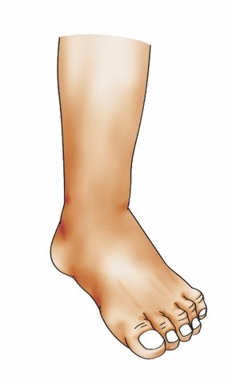
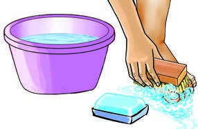

Question



Question
Why is it important to cut and wash your toenails?
Activity 9
(a) Listen to the video and follow the audio description or watch videos on the internet showing the steps for cutting and washing toenails.
(b) Cut and wash your toenails by following the steps
you have learnt.
Exercise 7
Match each of the following items with their uses by filling
the letter of the correct answer in the table.